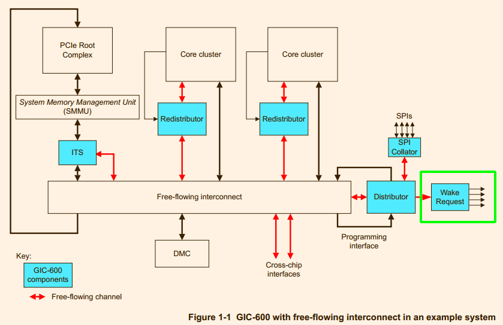
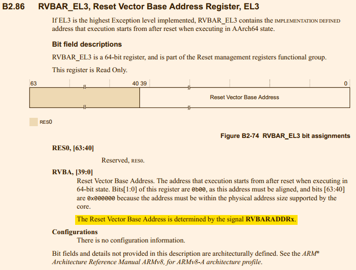
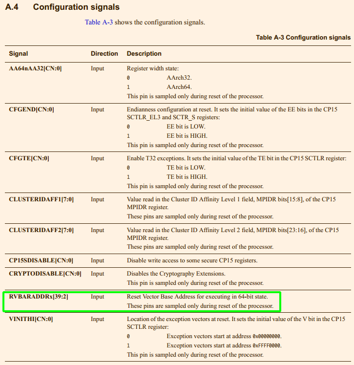
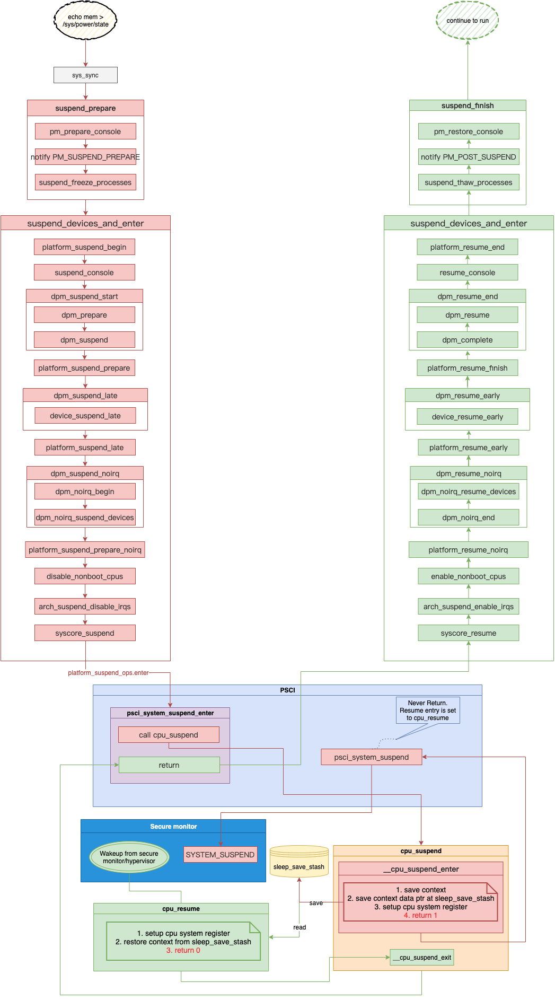
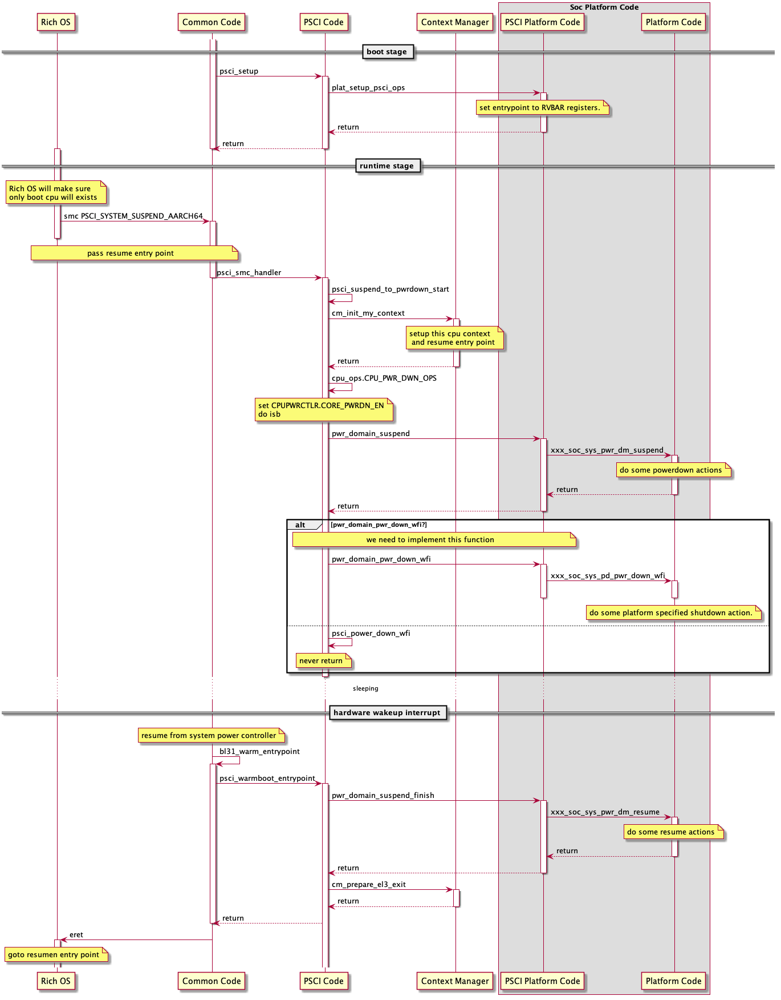

irq wakeup in linux
Table of Contents
术语
| 简写 | 全称 |
| TRM | Technical Reference Manual |
| GIC | Generic Interrupt Controller |
| smccc | SMC CALLING CONVENTION |
硬件架构
在本篇文章中基于AARCH64平台，GIC作为中断控制器来进行讨论
下面是GIC-600的系统框架图：

看图可知，Wake Request模块就是为了唤醒功能提供的信号输出。
GIC power down ？
GIC可以被关闭电源，也可以不关闭电源，这个在SOC设计阶段就可以选择。
对于Arm gic来言，一般具有两种情况
- GIC处于always on的power domain之中，这样gic在休眠时由于没有断电，仍旧可以正常工作，任何的中断都可以正常唤醒soc 1
- GIC在可以断电的power domain中，这样在休眠时一般都会对gic进行断电，这种状况下，系统需要soc特定的实现来进行唤醒。
具体实现各家SOC应该都不相同，不可同日而语。
CPU Power Down
下面是ARM Crotext A55 CPU的下电流程，CPU有寄存器CPUPWRCTLR来控制电源控制相关功能，当CPUPWRCTLR.CORE_PWRDN_EN置1时，就是代表CPU在下次执行WFI指令时要进入掉电状态。2
The Cortex-A55 core uses the following power down sequence.
To power down a core, perform the following programming sequence:
- Save all architectural state.
- Configure the GIC distributor to disable or reroute interrupts away from this core.
- Set the CPUPWRCTLR.CORE_PWRDN_EN bit to 1 to indicate to the power controller that a powerdown is requested.
- Execute an Instruction Synchronization Barrier (ISB) instruction.
- Execute a WFI instruction.
After executing WFI and then receiving a powerdown request from the power controller, the hardware performs the following:
• Disabling and flushing of caches (L1 and L2).
• Removal of the core from coherency.
从上面的掉电流程可知，A55在下电时，还需要SOC内部power controller的支持，不同的SOC厂商实现的方式千奇百怪，并且设计泄密在此不做深入。
CPU Power Up
从上边Power Down的流程可知，系统在进入Power Down之后需要进行reset才可以将CPU重新启动，具体的过程也是SOC厂商自己定义的行为，没有太大分析的必要。
Reset之后，CPU需要从RVBAR寄存器所显示的地址来重新启动。RVBAR寄存器是通过CPU的外部信号线进行输入的。
RESET的执行地址

由于没有在A55的TRM中找到关于此信号的定义，拿A53的来充个数。

从手册可知，复位执行地址是可以通过配置来修改的，并且4byte对齐(因为bit0,1不可配置)
Suspend In Linux
下图是Linux系统中suspend以及resume的流程图，图中以PSCI为例，描写了系统在休眠时的调用流程。

上面的流程着重描写了系统通过PSCI休眠时的调用流程，包括Linux系统从休眠状态唤醒之后的resume流程。
Linux唤醒时，运行的Linux内核的第一段指令是cpu_resume，之后再经过arm64 psci相关的一系列调用返回到psci_system_suspend_enter继续执行。
Linux irq wakeup
在Linux系统中，如果想要唤醒已经进入休眠状态中的cpu，就需要通过~enable_irq_wake~来设置开启唤醒功能3。
实际上，芯片支持的唤醒源个数是有限的，并不是每种中断都可以正常的唤醒系统。
gic对唤醒功能的支持
在gic600的TRM手册中，可以看到gic600有wake_request的输出信号，Power controller可以根据这个信号来将对应的cpu唤醒。
唤醒信号：
| Signal | Type | Source or destination | Description |
|
wake_request[ |
Output |
Power controller |
Wake request signal to power controller indicating that an interrupt is targeting this core and it must be woken. When asserted, the wake_request is sticky unless the Distributor is put into the gated state. |
irq flags
IRQCHIP_MASK_ON_SUSPEND
Mask non wake irqs in the suspend path
IRQCHIP_SKIP_SET_WAKE
Skip chip.irq_set_wake(), for this irq chip
由以下patch引入，提交说明已经很明确
60f96b41f71d2a13d1c0a457b8b77958f77142d1 Author: Santosh Shilimkar <santosh.shilimkar@ti.com> AuthorDate: Fri Sep 9 13:59:35 2011 +0530 Commit: Thomas Gleixner <tglx@linutronix.de> CommitDate: Mon Sep 12 09:52:49 2011 +0200 Parent: ed585a651681e genirq: Make irq_shutdown() symmetric vs. irq_startup again Contained: (no branch) master Follows: v3.1-rc5 (93) Precedes: v3.2-rc1 (11433) genirq: Add IRQCHIP_SKIP_SET_WAKE flag Some irq chips need the irq_set_wake() functionality, but do not require a irq_set_wake() callback. Instead of forcing an empty callback to be implemented add a flag which notes this fact. Check for the flag in set_irq_wake_real() and return success when set. Signed-off-by: Santosh Shilimkar <santosh.shilimkar@ti.com> Cc: Thomas Gleixner <tglx@linutronix.de>
ATF软件
arm atf中实现了psci协议，当系统休眠时，可以通过psci来进入休眠。psci方法：PSCI_CPU_SUSPEND_AARCH64，PSCI_CPU_SUSPEND_AARCH32
suspend的方法原型为：
int psci_cpu_suspend(unsigned int power_state, uintptr_t entrypoint, u_register_t context_id);
参数：
- power_state
- power_state参数比较复杂，power_state定义了系统要处于的低功耗模式，根据系统的实现，有两种格式可供选择。
- entrypoint
resume之后的入口地址，需要提供PA，或者IPA
The entry_point_address parameter is used by the caller to specify where code execution needs to resume at wakeup time. The parameter must be a Physical Address (PA), or, for a guest OS in a virtualized platform, an Intermediate Physical Address (IPA). In this case, the hypervisor must trap the call. Further details can be found in section
- context_id
- 回传参数，当系统resume之后，psci将这个值放入X0/W0/R0，作为第一个参数传递过去。
平台相关实现
在平台的实现中，ATF有几个函数是需要SOC平台进行实现的。
在atf中，psci lib已经实现了平台无关部份的代码，部份代码需要soc平台来根据自己的需要来实现。psci lib中与休眠唤醒关系不大，上述参数中entrypoint以及context_id都时psci代码来处理，SOC平台无需关心此部份代码。
为了有一个对atf中的休眠唤醒流程有一个直观的影响，使用下面的代码调用时序图来说明

arm-gic
在arm gic的实现中，既没有提供IRQCHIP_SKIP_SET_WAKE的flag，也没有实现set_irq_wake的实现。这是因为gic认为gic不处理休眠唤醒的问题，这些应该由平台来基于stacked irqchip来实现。4
Marc Zyngier在内核的邮件有如下回复
I don't have any strong feeling against this series (anything that
removes hacks from the GIC code has my full and unconditional support),
but I'd just like to make sure I understand the issue.
There is (AFAIU) 3 cases when suspending:
- The GIC is in an always-on domain: SKIP_SET_WAKE is set, because
there is nothing to do (we can always wake up). Problem solved.
- The GIC gets powered off, but we have additional HW that will take
care of the wake-up: this is implemented by a stacked irqchip that will
do the right thing: irq_set_wake only looks at the top level irqchip, so
the GIC flag isn't observed, and this should work (maybe by luck…).
- The GIC gets powered off and nothing will wake us up. I'd say that in
this case, having programmed a wake-up interrupt is a bit silly, and
doing S2R is equivalent to committing suicide. Do we have any mechanism
that would avoid getting in that situation?
Thanks,
M.
在Marc Zyngier的回复中，已经提到3种case
- GIC处于always on的电源域，这种情况下，通过设置SKIP_SET_WAKE就可以简单的解决我们的问题，因为不需要做任何事，系统总可以通过gic来唤醒。
- GIC会被掉电，这种情况下，需要额外的硬件来将系统唤醒（意味着各个SOC厂商都有各不相同的实现），这种情况下，gic的驱动也无法去处理，这就需要通过stacked irqchip来实现，平台的irqchip通过作为顶级的irqchip，gic作为下级irqchip就可以由SOC厂商去具体定制唤醒功能的设置。
- GIC会掉电，没有任何办法唤醒系统。这种情况完全是错误的，休眠等于自杀，需要避免进入这个状况。
所以当soc据有唤醒能力时，需要通过平台的gic驱动来实现，arm gic驱动作为平台gic的父设备。
irq parents
linux内核接口
- /sys/power/pm_wakeup_irq
可以查询倒最近一次休眠的唤醒源
implement stacked irqchip
used function & macors
IRQCHIP_DECLARE
用来声明一个irqchip驱动，包含compatible属性，irqchip的名称，以及初始化函数
device tree
dts中配置了sysirq，其parent是gic，
gic: interrupt-controller@58000000 { status = "okay"; compatible = "arm,gic-v3"; #interrupt-cells = <3>; #address-cells = <2>; #size-cells = <2>; ranges; interrupt-controller; reg = <0x0 0x58000000 0x0 0x10000>, // GICD <0x0 0x58040000 0x0 0x100000>; // GICR0~7 interrupts = <1 9 4>; }; sysirq: sysirq@system { compatible = "xxx,XX-sysirq", "syscon"; #interrupt-cells = <3>; interrupt-parent = <&gic>; interrupt-controller; ranges; services = <&tee_regmap>; irq-map = <48 2 0>, // GPIO <29 4 1>, // AON RTC <31 6 0>, // aon timer1 <30 8 0>, // aon time0 <9 10 0>, // eth0 <33 18 0>, // canfd0 <36 14 0>; // canfd1 reg = <0x0 0x43060000 0x0 0x634>; };
get map configuration from device tree node.
irq-map = <irq-number enable-bit polar-bit>; #address-cells = <2>; #size-cells = <2>; reg = <0x0 0x43840000 0x0 0x634>;
irq domain
关于irq domain可以参考以下文档
https://lwn.net/Articles/487684/
irq initialization
(gdb) bt #0 XX_irq_of_init (node=0xffffffc03efed568, parent=0x0 <bl1_entrypoint>) at ./include/linux/irqdomain.h:298 #1 0xffffff8008856224 in of_irq_init (matches=<optimized out>) at drivers/of/irq.c:546 #2 0xffffff8008849240 in irqchip_init () at drivers/irqchip/irqchip.c:29 #3 0xffffff800883241c in init_IRQ () at arch/arm64/kernel/irq.c:91 #4 0xffffff80088309f8 in start_kernel () at init/main.c:611 #5 0x0000000000000000 in ?? () Backtrace stopped: previous frame identical to this frame (corrupt stack?)
查找partent的irq, 并添加新的irq_domain
domain_parent = irq_find_host(parent); if (!domain_parent) { pr_err("XX_irq: interrupt-parent not found\n"); return -EINVAL; } domain = irq_domain_add_hierarchy(domain_parent, 0, intpol_num, node, &sysirq_domain_ops, chip_data); if (!domain) { ret = -ENOMEM; goto out_unmap; }
上面是主要内容，分为两步
- 获取parent的irq domain
- 添加新的irq_domain来实现需要的操作
irq domain ops
static const struct irq_domain_ops sysirq_domain_ops = { .translate = XX_irq_domain_translate, .alloc = XX_irq_domain_alloc, .free = irq_domain_free_irqs_common, };